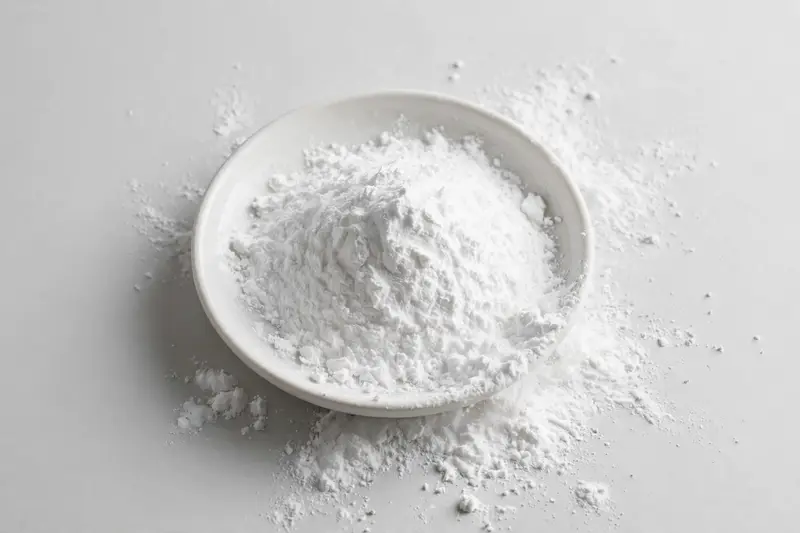

Tapioca fiber — clean-label soluble fiber for bars, beverages and low-sugar formulations.

Overview
Tapioca fiber powder is a soluble fiber derived from Manihot esculenta root starch and traded for sports-nutrition bars and clean-label fiber applications. Buyers commonly specify fiber content on a dry basis, alongside parameters such as sugar content and solubility. Demand is strong in the low-sugar and keto-adjacent food segment. As a Xi'an-based trading company, we source through vetted partner producers — share your target spec and we confirm feasibility honestly.
Specifications below reflect commonly requested options in the market — not a stock list. Share your target spec and we'll confirm exactly what we can supply, honestly.
| Specification | Details |
|---|---|
| Botanical identity | Tapioca fiber powder (Manihot esculenta root starch-derived soluble fiber) |
| Marker compound | Commonly requested spec grades: soluble fiber content on a dry basis, with sugar content and solubility parameters — confirm against your target specification. |
| Appearance | White to off-white fine powder |
| Mesh size | Typically 80–100 mesh (confirm per inquiry) |
| Testing | COA/TDS arranged on request; scope agreed per your spec |
Applications
Documentation
We don't claim in-house labs or certifications we don't hold. COA and TDS documents can be arranged on request, and testing scope is agreed against your specification before supply.
FAQ
Related products
Hesperidin (Citrus spp.)
Key marker: Hesperidin 90-98%
View specs →Betaine (trimethylglycine)
Key marker: Betaine 96-99%
View specs →Theobroma cacao
Key marker: Theobromine 10-20%
View specs →Oenothera biennis
Key marker: GLA Content
View specs →Dioscorea villosa
Key marker: Diosgenin Content
View specs →Buyer guides
Buyer’s guide
Identity, actives, heavy metals, micro — what each section of a Certificate of Analysis means, and the red flags that tell you to walk away.
Read the guide →Buyer’s guide
Section-by-section COA walkthrough — marker assays, heavy metals, micro panels, red flags, and a buyer checklist.
Read the guide →Send your target spec and volumes — we'll respond with a tailored quotation.
Request a Quote